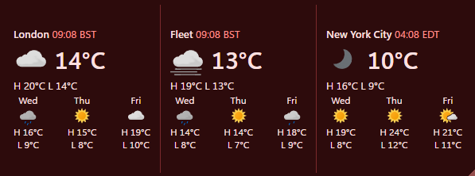
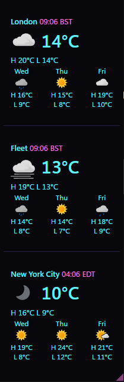

v1.1.1 Windows macOS Linux Free and open source
WeatherRibbon
A small ribbon of weather for the cities you choose, horizontal or vertical. What is the weather where your friends and family are, today and over the next few days? One cell per city, each with its local time, the weather now, today's high, low and rain and the three days after, in a small frameless ribbon you can put anywhere on any monitor.
A look
Every city's weather, one glance.


What you are looking at
- Two shapes, one ribbon: horizontal or vertical, from the menus or Settings. The grip in the corner resizes the cells by hand.
- A cell per city: its local time, the weather now, today's high, low and rain, then the three days after.
- Today means from now to midnight in that city, so late in the day its figures describe the hours left.
- London first, then cities further east; the Americas last, since they are behind UTC.
- The hours in detail: a click on a cell opens the next 24 hours there, with sunrise and sunset.
What it does not do
- Weather warnings. It issues none and is no substitute for your national weather service.
- The internet, beyond two questions. It asks MET Norway for forecasts and sun times, sending each city's position rounded to four decimal places and a User-Agent naming WeatherRibbon; it asks GitHub for the latest release, sending nothing about you. The donate button and Download hand their addresses to your browser.
- Radar or maps. No radar, satellite, air quality, pollen, tides or marine forecasts.
- The chance of rain. MET Norway gives it for the Nordic countries alone, so cells would disagree.
- People. A cell is a place, never a person.
Supporting WeatherRibbon
Free. It stays free.
There is no paid tier, no licence key and no feature held back behind a donation. If WeatherRibbon earns its place on your screen, a contribution supports its maintenance. The same button sits at the foot of Settings.
 Donate
Donate